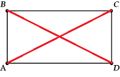
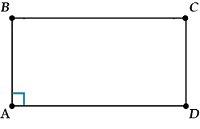
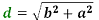
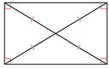
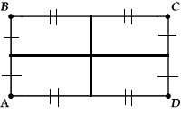
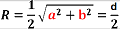
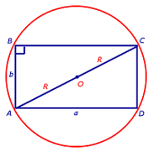
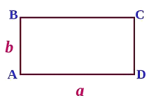
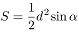
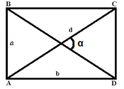

Прямоугольник
Прямоугольником
называется параллелограмм,
у которого все улы прямые.
Признаки прямоугольника
-
Если в параллелограмме
диагонали
равны,
то это- прямоугольник.

-
Если в параллелограмме один
угол прямой, то это -
прямоугольник.

-
Если в четырехугольнике три
угла прямые,
то это - прямоугольник.

Свойства прямоугольника
-
Диагонали прямоугольника равны, причем ,
где a и b - смежные стороны прямоугольника, d - диагональ прямоугольника.

-
Перпендикуляры,
проходящие через
середины
сторон
прямоугольника,
являются его осями симметрии.

-
Около прямоугольника всегда можно описать
окружность
радиуса:
 ,
где d - диагональ
прямоугольника.

-
Площадь
прямоугольника
равна произведению его смежных сторон:
S = ab.

-
Площадь
прямоугольника равна половине квадрата его
диагонали на
синус угла между
диагоналями:


-
Кроме того, поскольку прямоугольник является
параллелограммом, для него
справедливы все свойства параллелограмма.